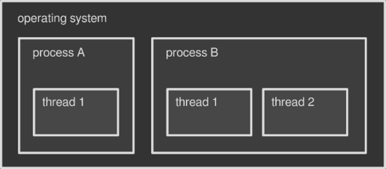

前言
本文是「多线程」技术入门篇，对进程、线程、纤程、并发、并行、线程安全、竞态条件等概念进行介绍，讨论多线程技术的实现原理、使用中可能遇到的问题，以及如何正确处理问题。
随着计算机硬件（Computer Hardware）和操作系统（Operating System）的进步，现代计算机能够同时执行多个任务，使程序执行速度更快，程序响应时间更短。
在软件开发中使用并发既诱人又困难，需要了解计算机底层的工作原理。我们从操作系统中线程的基本概念入手，介绍线程背后的魔法。
进程与线程
现代主流操作系统都支持同时运行多个程序，比如：我们可以一边使用浏览器浏览网页，一边用播放器听歌。运行中的浏览器程序和播放器程序都是进程，操作系统提供了一套机制充分利用底层硬件保证多个进程同时运行，无论具体采用的是哪种技术，最终都会让你感觉这些程序是在同时运行的。
在操作系统中同时执行多任务，进程不是唯一选择。每个进程都能在其内部并发执行子任务，进程内部的子任务也被称为线程。可以把线程看成一个进程切片，进程启动时，至少会启动至少一个线程，称为主线程，接下来，根据程序或开发者的需要可以启动新线程或终止线程。多线程即在一个进程中运行多个线程，例如：播放器会运行多个线程，一个线程显示界面（通常是主线程），另一个线程播放音乐。
可以把操作系统看成进程的容器，而进程又是线程的容器。

图：操作系统、进程、线程关系图
进程与线程的区别
操作系统为每枚进程分配一块独立的内存空间，默认情况下，一枚进程的内存不会与其他进程共享，例如：浏览器不能访问播放器的内存，反之亦然。 同一程序启动的多个实例也是如此：启动两个浏览器，操作系统会把每个实例看作一个新进程，分别为其分配一块独立的内存。多个进程之间默认是无法共享数据的，除非使用进程间通信（IPC）技术。
与进程不同，线程能够共享父进程的内存空间。 例如：在播放器中，音乐播放线程可以访问界面线程的数据，反之亦然。线程之间数据共享会更加容易。另外，线程占用资源更少，创建切换速度更快，这就是为什么线程也被称为轻量级进程。
如果没有多线程技术，则需要将这些任务作为进程运行，通过操作系统同步，使用 IPC 通信，这会非常烦琐，而且由于进程比线程更“重”，程序的执行速度也会变得更慢。
绿色线程（Green Thread）
到目前为止，线程都由操作系统管理，必须经由操作系统才能启动/调度/销毁线程。不过，并非所有平台都支持本地线程（如：早期的Solaris OS），Java 提出了绿色线程（Green Thread）的概念，“绿色线程“运行在用户空间，通过第三方库或虚拟机进行调度。
绿色线程（Green Thread）也称为纤程（Fibers），它在用户空间实现了多任务的协同处理，并不通过操作系统内核。纤程无法被操作系统内核代理，拥有自己的栈空间，纤程执行上下文的切换只发生于用户空间，并不通过操作系统内核进行调度。每一个纤程都有一个父级线程，线程又从属于一个进程，纤程又被称为“轻量级线程”。纤程的优点是创建速度快、管理效率高，因为完全绕过了操作系统，但纤程也有缺点。
今天的 Java 不使用纤程，而是使用本地线程。一些其他编程语言，比如 Golang、Haskell、Rust等实现了类似纤程的机制以取代本地线程。
多线程的作用
为什么进程中需要使用多线程？正如前文提到的，并行化可以加快程序处理速度。举个例子：在视频编辑器里渲染一部电影，编辑器会把渲染工作分配给多个线程，每个线程只处理其中一部分，假设一个线程需要处理1小时，那么两个线程只需要处理30分钟，四个线程缩短到15分钟。
真的这么简单？还需要考虑以下三点：
不是所有程序都要使用多线程。如果程序本身顺序执行或者频繁等待用户输入，这种情况下多线程就无法发挥作用。
仅仅增加线程并不会让程序跑得更快，每个子任务都需要经过仔细设计和考虑。
并不能保证并行，一切都依赖于底层硬件。
最后一点是很关键的一点，如果计算机底层硬件不支持同时执行多个任务，操作系统会努力让它们看起来像同时执行（稍后会对此进行介绍）。
现在，让我们暂时把并发（Concurrency）理解为：多任务看起来同时执行的样子；并行（Parallelism）理解为：多任务是真正的在同时执行。
并发（Concurrency）与并行（Parallelism）
CPU 是程序真正执行的地方，它由几个部分组成，其中最主要的部分被称为核心（Core），一个 CPU 核心同一时刻只能执行一个操作。这是一个非常明显的缺陷，因此，操作系统（OS）设计了一系列机制使得单核设备上也可以支持多任务（多进程、多线程）。其中最重要的技术称为抢占式多任务处理。
抢占式多任务处理是指：中断当前任务并切换到另一个任务，稍后再恢复到前一个任务执行。如果 CPU 只有一个核心，那么操作系统会将这个核心的计算能力分配给多个进程或线程，它们会在循环中一个接一个地执行。这种设计造成一种同时在执行多个任务的错觉，满足了并发，但不是真正的并行，因其并没有真正在同时运行多个任务。
现代 CPU 早已经不止一个核心，同一时刻每个核心都可以独立执行一个操作，这意味着，对于多核心 CPU，能够真正做到并行（Parallelism）。
现代操作系统能够支持多核 CPU：检测 CPU 核心数，为每个核心分配进程或线程。进线程可以分配到任意核心上执行，这个过程对正在运行的程序而言是完全透明的，不仅如此，仍然可以使用抢占式多任务机制，这样一来，系统可以运行的进线程，实际远超过物理硬件的核心数。
单核虽然无法做到真正的并行，但多线程编程仍是有意义的。当进程包含了多个线程时，由于抢占式多任务机制，即使其中某个线程执行缓慢或任务阻塞，也可以保持程序正常运行。
举个例子：运行的桌面程序从磁盘读取数据，读磁盘这一过程非常缓慢，如果程序只有一个线程，那么整个程序都会卡住无法响应直至磁盘读取结束，因为所有计算资源都分配给了唯一的线程，浪费在等待磁盘 IO 上了。
使用多线程技术重新设计这个程序：线程 A 访问磁盘，与此同时线程 B 负责主界面。当线程 A 由于读取磁盘进入等待时，线程 B 仍然可以保持界面作出响应，这里存在两个线程，操作系统可以在它们之间来回切换，而不会在阻塞的线程上卡住。
数据竞争（Data Race）与竞态条件（Race Condition）
正如我们知道的那样，线程可以共享父进程的内存空间，这使得进程中的多个线程可以很方便地交换数据。多个线程从同一块内存读取数据没有任何问题，但是当某个线程执行写入操作而其它线程正在读取时，就会出现问题。
数据竞争：读线程正在读取内存，而写线程还没有完成写入操作，这时会读取到不完整的数据。
竞态条件：多个线程按照不可预知的顺序执行操作，而实际的要求应该按照指定顺序执行。读线程应该只在写线程完成写入操作后再读取数据。
数据竞争（Data Race）原因
我们知道，一枚 CPU 核心同一时刻只能执行一条机器指令，指令因其不可分割性被称为原子操作，即：不能拆分成更小的操作。
注：希腊单词 atom （ἄτομος; atomos），表示不可切分。
不可分割性让原子操作天然具备线程安全：当一个线程写入共享数据操作具有原子性时，其他线程在写入操作完成之前无法读取数据；反之，当一个线程读取共享数据操作具有原子性时，一定能够读到某个时刻的完整数据，不会发生数据竞争。
坏消息是，程序中绝大多数的操作并不是原子操作，即使如x = 1这样简单的赋值语句，在硬件上也可能由多条机器指令组成，赋值语句本身并不是线程安全的。
竞态条件（Race Condition）原因
抢占式多任务机制使得：操作系统能完全控掌控线程管理，按照调度算法启动、暂停、终止线程，而程序员无法控制线程执行时间或执行顺序。实际上，并不能保证下面这段简单的代码按照指定顺序执行。
writer_thread.start()
reader_thread.start()
代码清单：
Java启动多线程
多运行几次就能注意到：有时写线程先启动，有时读线程先启动。线程行为具有不确定性：每次运行结果都会改变，无法预测。调试带有竞态条件的程序非常烦琐，不能以可控的方式复现问题。
并发控制与线程安全
数据竞争和竞态条件都是并发编程中时常出现的问题。并发控制是一种多线程并发的艺术，操作系统与编程语言为此提供了一系列解决方案，其中最重要的几项：
同步：确保同一时刻仅有一枚线程在使用资源。将代码的特定部分作上标记，这样多个并发线程就不会同时执行这段代码，也不会让共享数据变得混乱。
原子操作：借助操作系统提供特殊指令，将非原子操作（如：赋值操作）转化为原子操作。
不可变数据： 当共享数据被标记为不可变时，只允许线程从中读取数据，而不允许线程改变数据内容，解决了竞态条件的根本问题。
一段代码如果声称自己线程安全，那么应该做到：在多线程调用时，没有数据竞争，并且不会触发竞态条件。你可能会注意到，一些开发库声称自己是线程安全的，如果你正在编写多线程代码，那么就需要确保所有第三方库都能够跨线程使用而且不会引起并发问题。
参考资料
- The Java™ Tutorials(Concurrency): https://docs.oracle.com/javase/tutorial/essential/concurrency/index.html